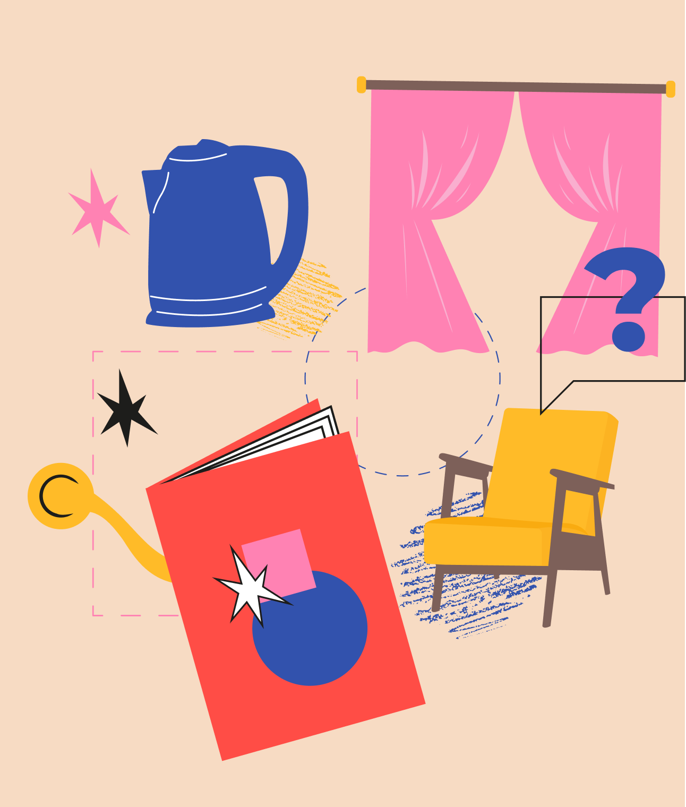
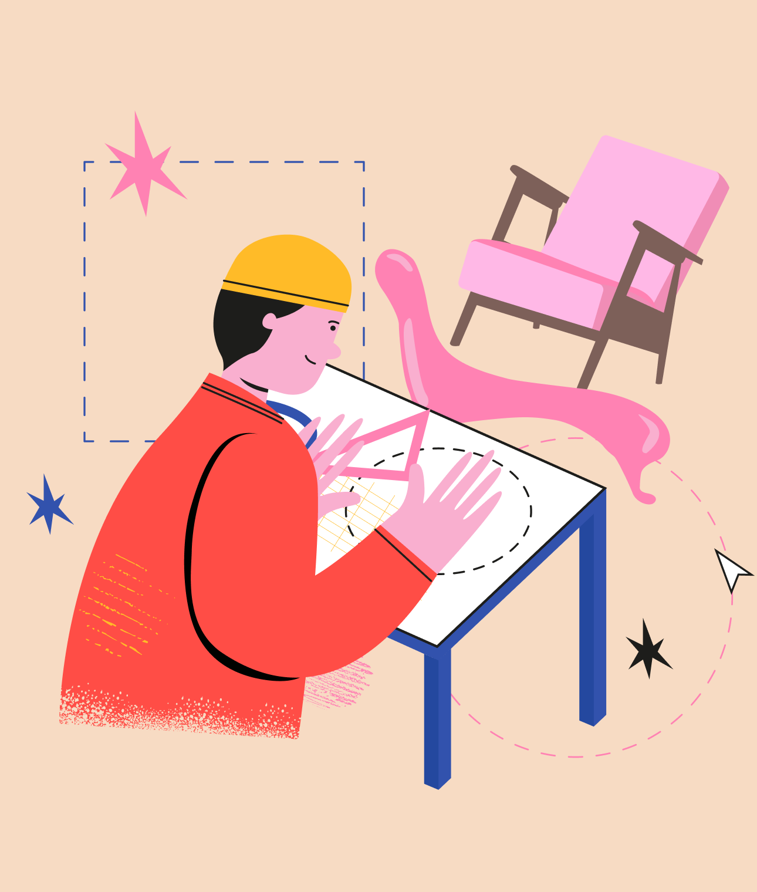
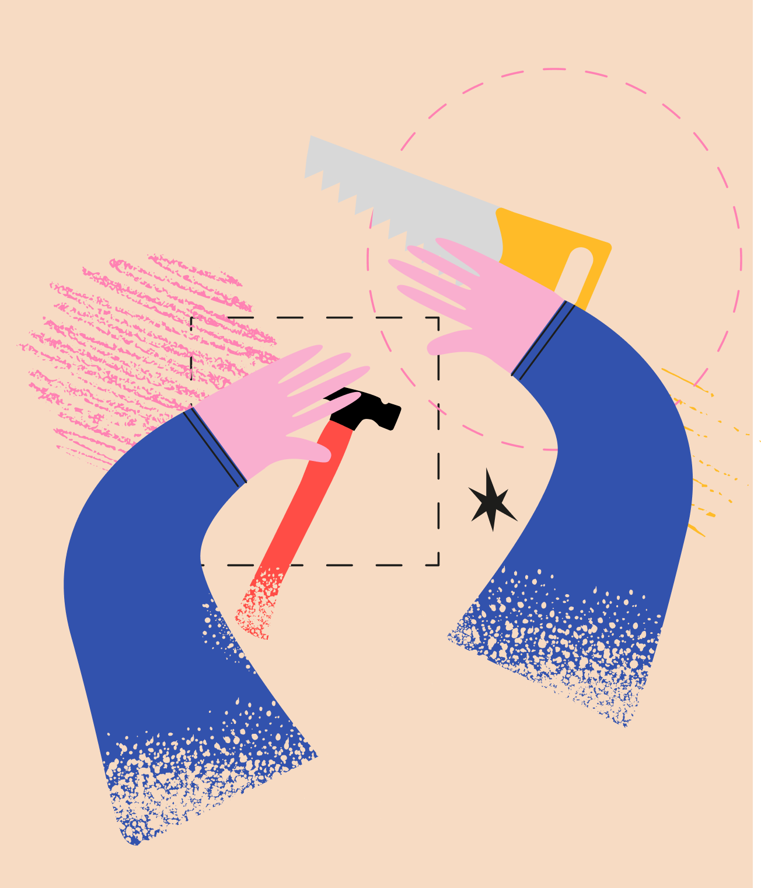
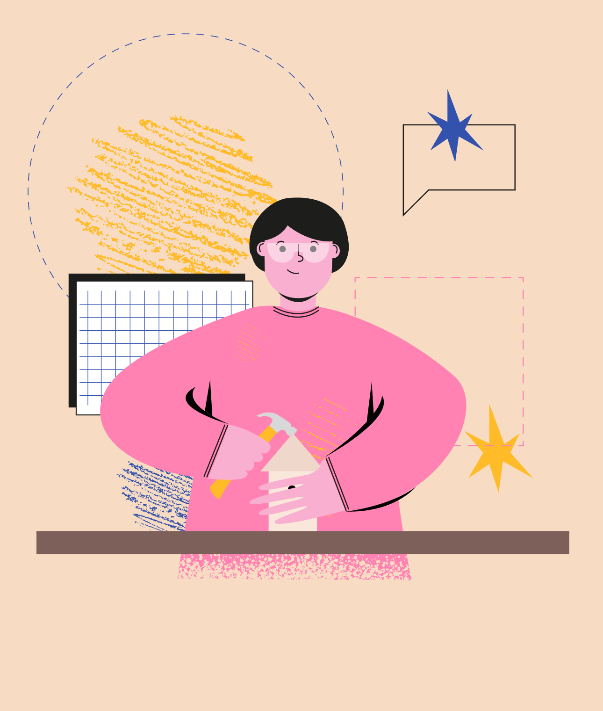

Пройди тест и убедись, что у тебя получилось верно понять, кто такой предметный дизайнер и что он делает
Пройди тест и убедись, что у тебя получилось верно понять, кто такой предметный дизайнер и что он делает.
начать тест >

Вопрос 1 из 5
< Назад
Начнем с простого. В каком варианте ответа все вещи — результат работы предметного дизайнера?
Почти верно. Лишнее здесь — «скульптура». Арт-объекты призваны украшать, а функциональной роли не имеют, так что создают их художники, а не дизайнеры.
Верно. Но есть оговорка: рисунки для текстиля могут создавать и предметные дизайнеры, и дизайнеры одежды, а порой за это берутся знаменитые художники. Наверное, в этом и причина бесконечного разнообразия принтов, делающего нашу жизнь ярче.
Неверно. Корпус разрабатывают промышленные дизайнеры, обстановку дома — интерьерные, а за обложку отвечает графический дизайнер. Но доля правды в ответе все же есть: эти профессии – смежные, и переход от предметного дизайна в любую из этих сфер при желании возможен.
далее >

Вопрос 2 из 5
< Назад
Стул, кресло и даже трон — сесть можно на что угодно. Выбери, что точно создано предметным дизайнером.
Неверно. При конструировании символа Семи королевств не было задачи сделать его удобным для актеров — а только эффектным и
заминающимся для фанатов сериала. Так что его образ — полностью заслуга кинохудожников и реквизиторов.
Верно. Неважно, как он выглядит и каким тиражом произведен. В любом случае его спланировал и начертил предметный дизайнер.
Верно. Это или коллекционный дизайн — предмет на грани с искусством, либо результат ремесленного мастерства. В обоих случаях
здесь есть место предметному дизайну. Но и самый обычный стул из мебельного магазина — тоже верный ответ.
далее >

Вопрос 3 из 5
< Назад
Уроки труда в школе имеют какое-либо отношение к предметному дизайну?
Верно. Любые знания и умения, полученные до того, как определиться с профессией, помогают сделать верный выбор. В случае
предметного дизайна любовь к ручному труду — отличное подспорье.
Неверно. Прежде чем перейти в область массового производства, предметный дизайнер должен научиться понимать, как ведет себя тот
или иной материал. Начертить можно такое, что пользоваться этим в реальной жизни будет сложно! Так что связь, конечно,
есть.
Неверно. Как бы это ни было грустно, но без базовых знаний и умений невозможно реализоваться в предметном дизайне. Новое, яркое и
смелое создается на основе старого и проверенного временем — иначе человечество вечно изобретало бы велосипед.
далее >
Вопрос 4 из 5
< Назад
Почему предметный дизайн не cмогут заменить роботы и нейросети?
Отчасти верно. Безусловно, предметы, созданные вручную, никогда не перестанут быть объектом желания. Но не каждая вещь, над которой
работал предметный дизайнер, сделана непосредственно им.
Верно. Нейросети— просто еще один инструмент, позволяющий человеку легче и быстрее реализовать свой замысел. Искусственный
интеллект – важное подспорье в любых руках, в том числе предметного дизайнера, но без фантазии и идеи сделать что-то
новое невозможно.
Неверно. Современные станки, оснащенные сложным ПО, способны делать тончайшую работу без потери качества. Финальный контроль
необходим, но главное — это то, что только человек способен создать что-то невиданное, предлагающее новый уровень
комфорта.
далее >

Вопрос 5 из 5
< Назад
И наконец: что главное в работе предметного дизайнера?
Верно. Как и все три пункта. Предметный дизайн — это профессия, которая позволяет реализовывать себя и как художника, и как ремесленника, и как
архитектора, и как инженера. Границ нет!
Верно. Как и все три пункта. Предметный дизайн — это профессия, которая позволяет реализовывать себя и как художника, и как ремесленника, и как
архитектора, и как инженера. Границ нет!
Верно. Как и все три пункта. Предметный дизайн — это профессия, которая позволяет реализовывать себя и как художника, и как ремесленника, и как
архитектора, и как инженера. Границ нет!